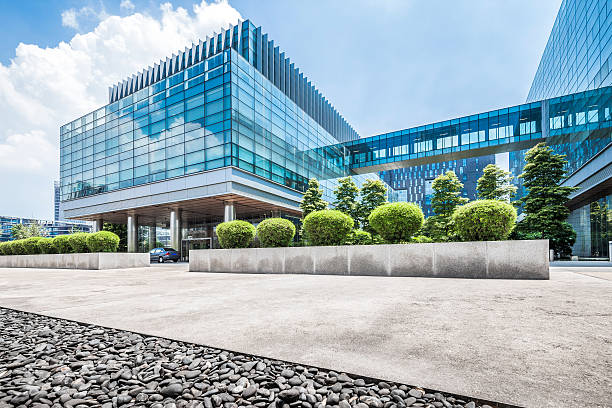

GANESH ENTERPRISE
Build A Building
-
Building Information Modeling (BIM) is an intelligent, 3D model-based tool that provides a digital representation of a facility's physical & functional aspects. May 9, 2023. The architecture, engineering, and construction (AEC) sector has long been plagued with high costs, slow deliverables, and lack of communication.
-
Building information modeling (BIM) is a process involving the generation and management of digital representations of the physical and functional characteristics of places. BIM is supported by various tools, technologies and contracts.